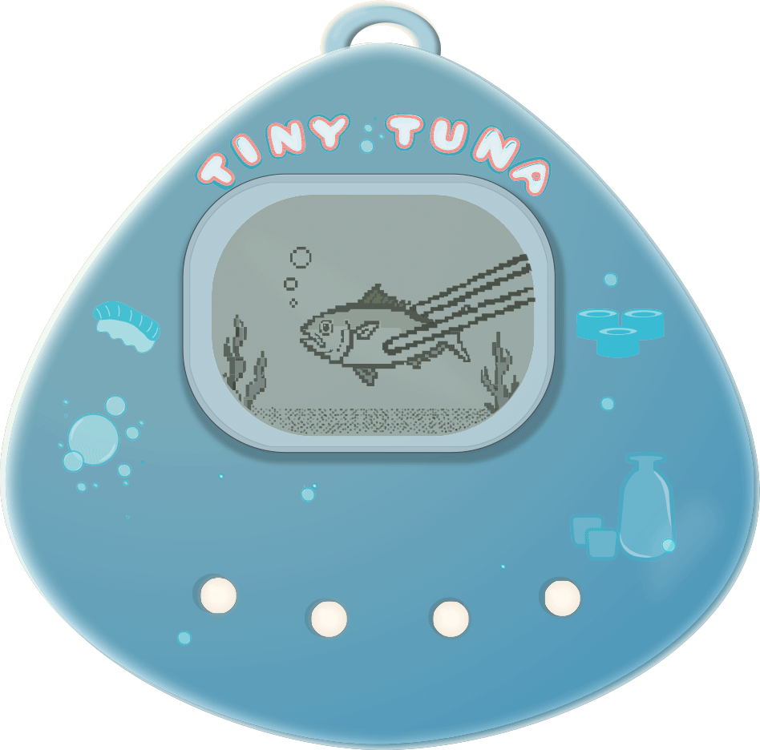
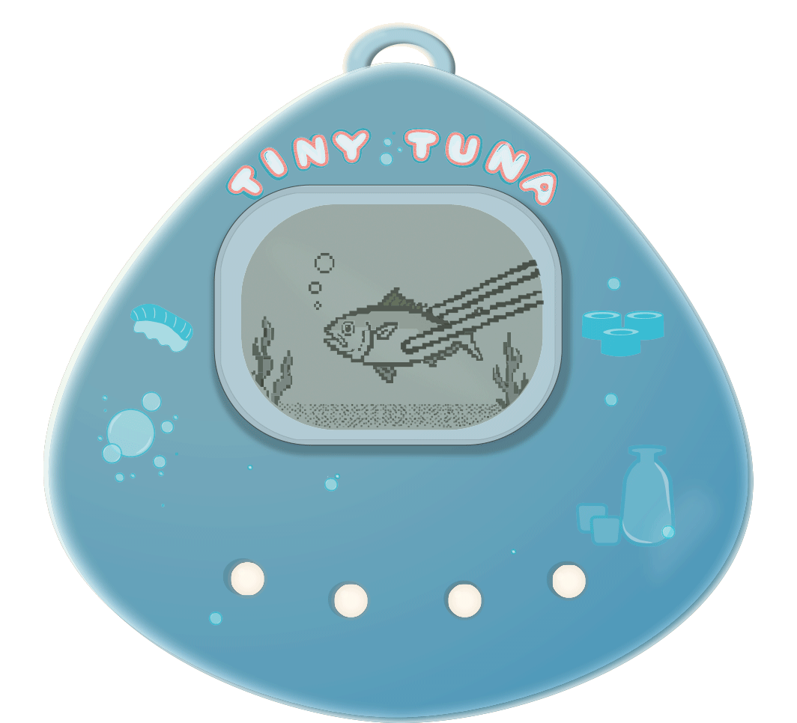
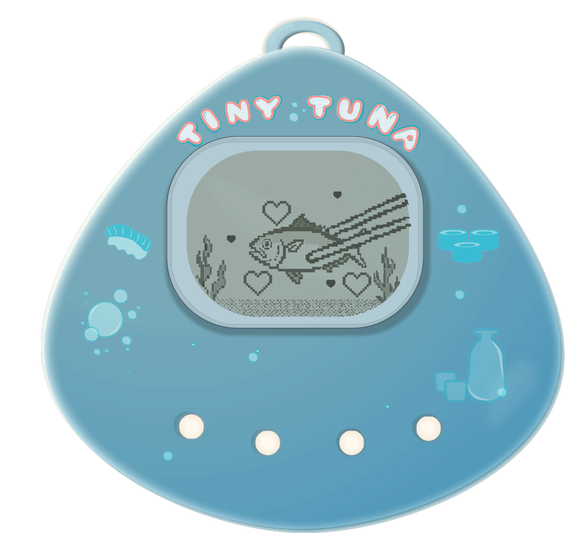
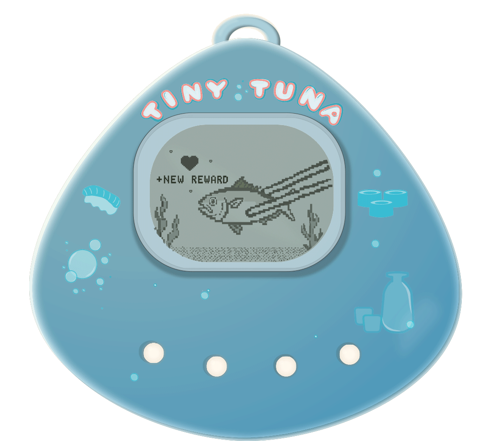
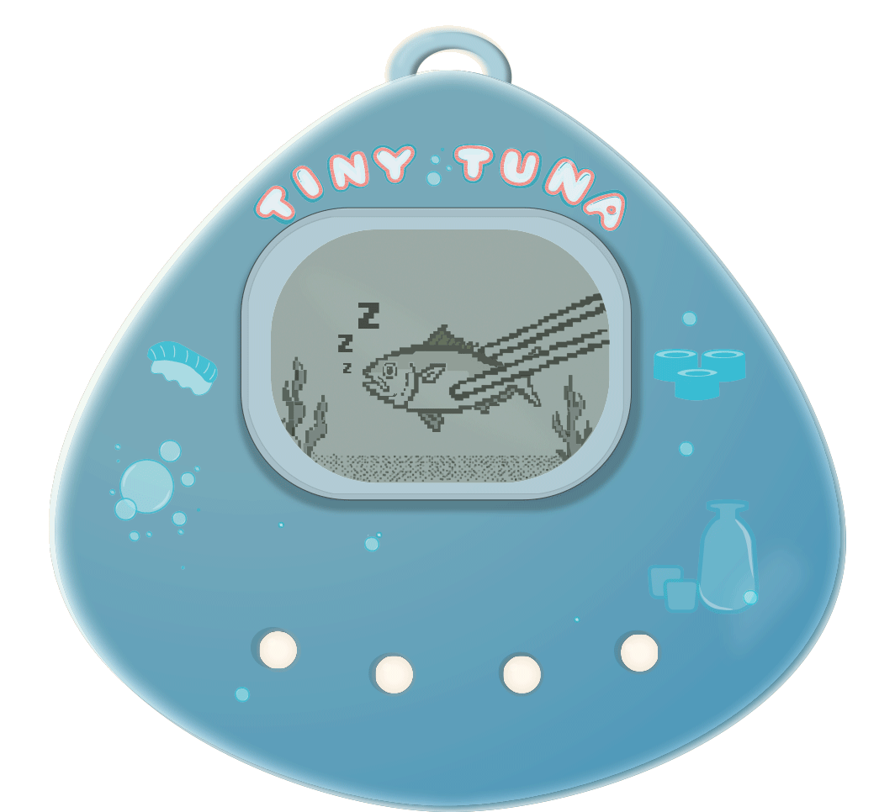

Gamified ordering experience
A virtual pet that turns delivery wait time into part of the experience.
Tiny Tuna is a playful sushi-ordering concept that transforms the post-checkout waiting period into a lightweight virtual pet interaction.

Role
Product concept, brand design, UX/UI, interaction design
Origin
Sharpen design prompt expanded into a complete product concept
Focus
Gamification, waiting states, delight, reward loops
Where it started
From a small prompt to a full product world.
Tiny Tuna began as a Sharpen prompt asking designers to create an app icon for a sushi restaurant using Early Modern styling. Rather than stopping at the icon, I explored how the ordering experience itself could become more memorable. The result was a playful virtual pet that accompanies customers while their order is being prepared.
Original Sharpen prompt
Design an app icon for a sushi restaurant and try Early Modern styling.
Brand system
A nostalgic digital pet for a modern ordering experience.
Tiny Tuna blends the emotional appeal of handheld virtual pets with the convenience of modern food ordering. The visual language draws from Tamagotchi-inspired devices, soft aquarium tones and playful reward mechanics to create a brand that feels approachable and memorable.

Concept
What if waiting became part of the experience?
Most food ordering apps treat checkout as the end of the experience. Tiny Tuna treats it as the beginning of a small interaction loop. After placing an order, users can feed, care for and check in on a tiny tuna while their food is being prepared.
Interaction loop
A tiny companion for the fulfillment window.
The virtual pet creates a playful feedback loop: order placed, tuna appears, user interacts, tuna reacts, reward earned. The goal is not to add complexity. It is to turn passive waiting into a memorable brand moment.

Idle
Select Food
Eating

Happy

Reward

Sleeping
UX value
Delight can be strategic.
Tiny Tuna explores how emotional design can support retention, anticipation and brand memory. The interaction is intentionally low stakes, but it gives customers a reason to stay engaged after checkout instead of simply watching a progress bar.
Reflection
Not every product has to be serious to be thoughtful.
This project gave me space to explore behavior design, brand personality and playful interaction patterns. It also helped me practice turning a narrow creative prompt into a fuller product ecosystem with a clear user flow and emotional payoff.